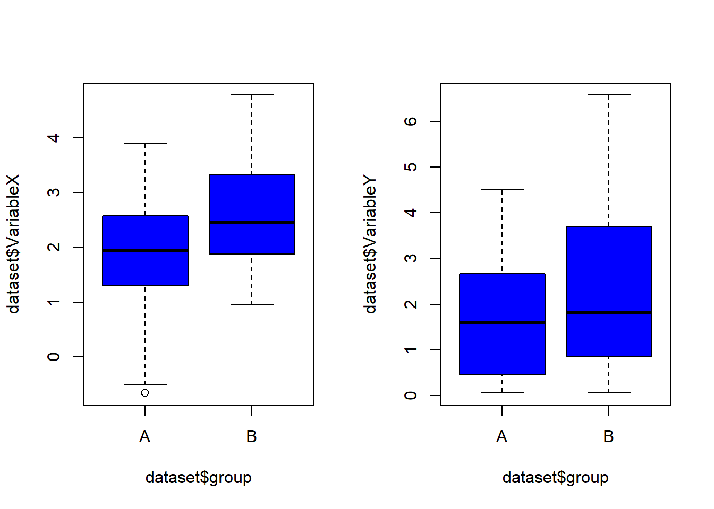
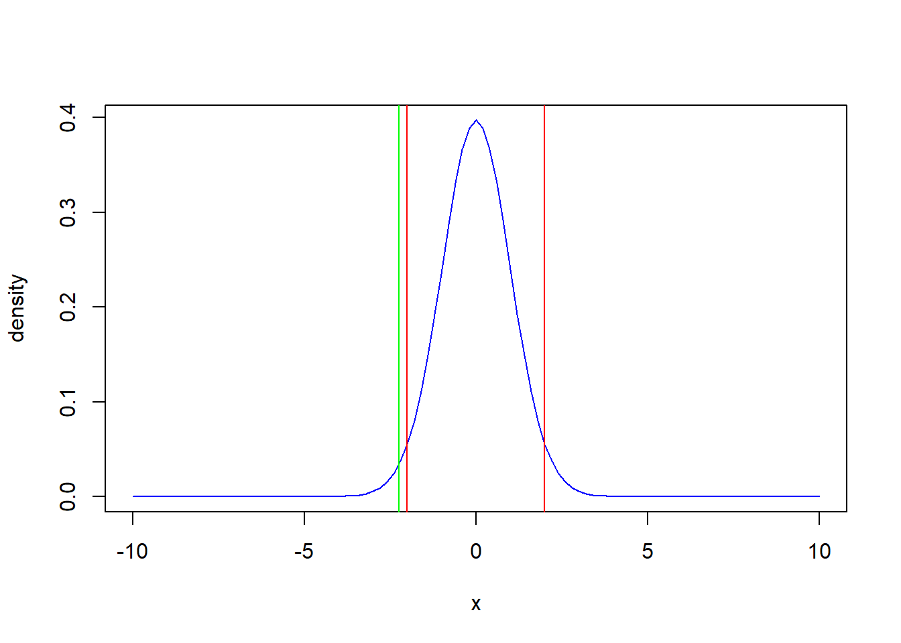
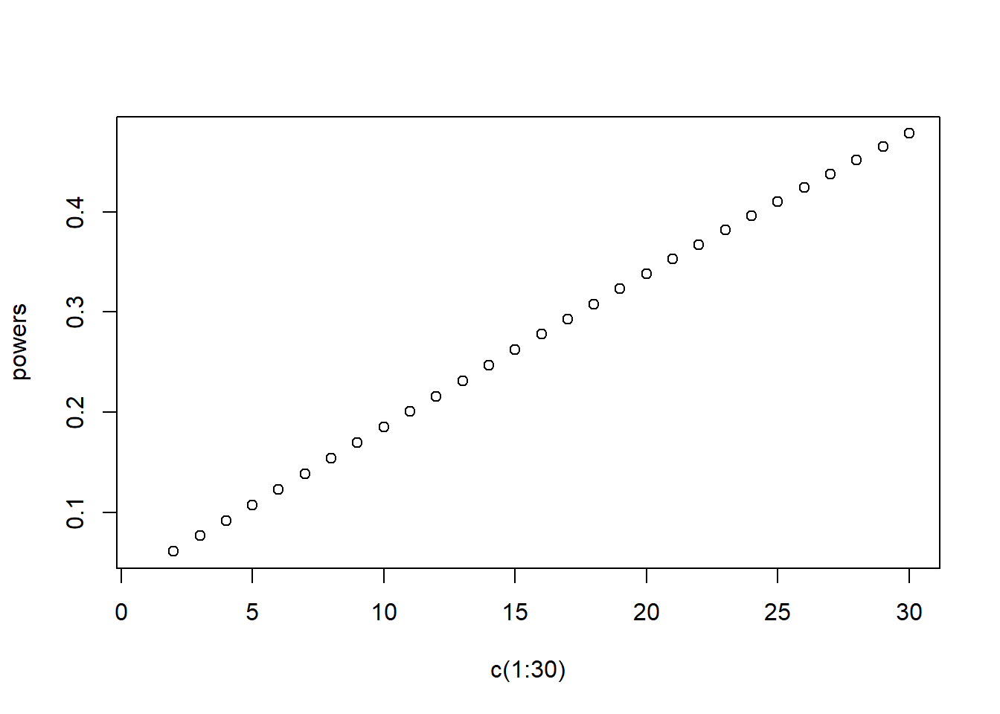

Chapter 2 Statistical tests - Part 1
2.1 Comparing 2 groups
2.1.1 Motivation
We consider again the decathlon2 dataset. After exploring the dataset and understanding its structure, we want to test the performances between the two different events, i.e. the Decastar and the OlympicGames.
library(factoextra)
data(decathlon2)When comparing the distribution of a of values from a continuous variable of two groups we commonly compare the mean of the set of values obtained in both groups. Sample means could look different but are the samples really drawn from 2 different distributions?
2.1.2 Working Example
Let us consider a dataset containing two continuous variable that we will call VariableX and VariableY and a categorical variables indicating which groups samples are from.
set.seed(352)
sample.size<-30
variableX.A <- rnorm(sample.size, mean = 2, sd = 1)
variableX.B <- rnorm(sample.size, mean = 2.4, sd = 1.1)
variableY.A <- rgamma(sample.size, shape = 2, scale = 1)
variableY.B <- rgamma(sample.size, shape = 2, scale = 1.1)
group <- rep(c('A', 'B'), each = sample.size)
dataset <- data.frame(VariableX = c(variableX.A, variableX.B),
VariableY = c(variableY.A, variableY.B),
group = group, stringsAsFactors = T)We start by plotting the boxplots for each group of both variables.
#Boxplots for variable X and Y
par(mfrow=c(1,2))
boxplot(dataset$VariableX ~ dataset$group, col = 'blue')
boxplot(dataset$VariableY ~ dataset$group, col = 'blue')
We can identify by ‘eye’ differences between the distribution of both group but how can we quantify the differences if there is any? To do so we will use statistical tests.
The most common test to compare two groups is the Student’s t test, this test as the same name as the Student’s t distribution as it utilizes the same distribution. Let’s assume that two sets of values are drawn from distributions with expectancies \(\mu_1\) and \(\mu_2\), and variances \(\sigma_{1}^{2}\) and \(\sigma_{2}^{2}\), respectively. The Student’s test statistic is computed as follows:
\(t = \frac{\overline{x_{1}}-\overline{x_{2}}}{SEDM}\)
where the standard error of difference of means is:
\(SEDM = \sqrt{SEM_{1}^{2}+SEM_{2}^{2}}\)
The square root of the sum of the squared standard errors to mean of each group. The standard error to the mean can itself be computed as the standard deviation divided by the square root of the number of samples.
\(SEM_{1} = \frac{\sigma_1}{\sqrt{n}}\)
When using a statistical test two hypotheses are formulated, the null hypothesis \(H_0\) and the alternative hypothesis \(H_a\), respectively. In the case of the Student’s t-test, the hypotheses are:
\(H_0\) : \(\mu_{1} = \mu_{2}\) and \(H_a\) : \(\mu_{1} \neq \mu_{2}\)
Note that there can be 3 different alternative hypothesis depending on what we want to test. The test for alternative hypothesis presented above is called the two sided Student’s t test as we are testing for different means but we are not making any assumptions on which direction the differences is. Two other alternative can be tested. Namely, \(H_a\) = \(\mu_{1} < \mu_{2}\), and \(H_a\) = \(\mu_{1} > \mu_{2}\). Under the null hypothesis the variable t follows a Student’s distribution of degrees of freedom equal to \(n1 + n2 -2\) if the variances \(\sigma_{1}^{2}\) and \(\sigma_{2}^{2}\) are equal. If this is not the case the statistics t can still be approximated as a Student’s t distribution with a number of degrees of freedom given by the Welch procedure that we won’t detail here.
Let’s apply the Student’s t test to our dataset:
#t-test for VariableX
test.variableX <- t.test(dataset$VariableX ~ dataset$group)
test.variableX##
## Welch Two Sample t-test
##
## data: dataset$VariableX by dataset$group
## t = -2.2435, df = 57.612, p-value = 0.02872
## alternative hypothesis: true difference in means between group A and group B is not equal to 0
## 95 percent confidence interval:
## -1.20392326 -0.06848317
## sample estimates:
## mean in group A mean in group B
## 1.900228 2.536431Let’s look at the results obtained. We can see that the estimated means are equal to 1.9002279 and 2.5364311 in group A and group B respectively. This lead to an estimated difference in mean of -0.6362032. The computed test statistic is equal to -2.2435031. The number of degrees of freedom estimated is equal to 57.6120941. We can then plot the density distribution of this Student’s t random variable.
curve(dt(x, df = test.variableX$parameter), col = 'blue', from = -10,
to = 10, ylab = 'density')
abline(v = qt(c(0.025, 0.975), df = test.variableX$parameter),
col = 'red')
abline(v = test.variableX$statistic, col= 'green')
As we can see the value of the statistics is outside the range delimited by the 2.5% quantile and the 97.5% quantile. Therefore it is unlikely that the statistics is drawn from such random variable. It allows us to reject the null hypothesis and accept the alternative hypothesis with less than 5% chance risk of making a mistake. The p-value obtained from the test is the probability that the statistics is drawn from the hypothetical Student’s t distribution under the null hypothesis from quantiles table for example.
An important output information from the output is also the 95% confidence interval. This interval quantifies the uncertainty of the estimate of the mean difference. The 95% confidence interval is a range of values that you can be 95% certain contains the true mean difference between the two populations. As we can see 0 is not in this range allowing us to, once again, reject the null hypothesis of equality of the means. The confidence interval can be computed by using the SEDM and the mean difference obtained in the test. For a level of confidence \(\alpha\) of a two sided Student test is give by the formula:
\(high Boundary = mean + t_{1-\frac{\alpha}{2}}*SEDM\) \(low Boundary = mean - t_{1-\frac{\alpha}{2}}*SEDM\)
We can see from this formula that two factors can influence the size of the confidence interval. Indeed, the SEDM is a function depending on the standard deviation and the number of samples in each group. On one hand, increasing the number of sample will improve the accuracy of the test and narrow the confidence interval. On the other hand, samples with large standard deviation will lead to larger confidence intervals. We can compute the confidence intervals of the test we made earlier:
low.boundary <- test.variableX$estimate[1] - test.variableX$estimate[2] -
qt(0.975, df = test.variableX$parameter)*test.variableX$stderr
high.boundary <- test.variableX$estimate[1] - test.variableX$estimate[2] +
qt(0.975, df = test.variableX$parameter)*test.variableX$stderr
c(low.boundary, high.boundary)## mean in group A mean in group A
## -1.20392326 -0.06848317The Student’s t test is a great tool to compare two distributions. However, it has its weaknesses. In case of skewed data, the standard deviation of both compared samples can be relatively different and impact the power of the test to detect relevant differences. In such cases, it is preferable to transform the data using for example a log transformation. For the Student’s t test it is requested that the distributions of the samples values are following a normal distribution or to have at least a sample size of 30 in each group (central limit theorem). If this is not the case, it is better to use a non parametric test called Mann-Whitney-Wilcoxon test (or Mann-Whitney U test or Wilcoxon sum rank test).
The Mann-Whitney-Wilcoxon test is non parametric as it does not test a specific parameter to differentiate two populations. Instead we will test if the probability that an observation in group A is superior to an observation from group B is different from the probability that an observation from group B is superior from group A. The main assumption of the Mann-Whitney-Wilcoxon test is that the samples from both groups must be independent so it cannot be used for paired observations. For paired observations we would prefer the Wilcoxon signed-rank test that we won’t detail here. If the observations in group A are drawn from a random variable X and the observation in group B are coming from a random variable Y the null and alternative hypotheses are:
\(H_0\) : \(P(X > Y) = P(Y > X)\) and \(H_a\) : \(P(X > Y) \neq P(Y > X)\)
To simplify the test relies on comparing the medians of both populations. The statistic of the test called U is computed as follows. All observations are pooled together and ranked based on their values. For example if we have a pooled set of 6 distinct values (2, 4, 4, 4, 1, 5), the ranked version of this set of obervations becomes (2, 4, 4, 4, 6, 1). Let’s call \(R_1\). We can then compute U as:
U = \(R_1 - \frac{(n_1)(n_1 + 1)}{2}\)
With this statistics U we can then compute the p-value using either a Wilcoxon Rank-Sum Table in case of small samples and approximating U as a normal distribution for large samples:
wilcox.test(dataset$VariableY ~ dataset$group, alternative = "two.sided")##
## Wilcoxon rank sum exact test
##
## data: dataset$VariableY by dataset$group
## W = 358, p-value = 0.1774
## alternative hypothesis: true location shift is not equal to 0We can notice that the output of the Mann-Whitney-Wilcoxon test is smaller than for the Student’s t test. Indeed as it is a non parametric test it does not provide direct effect size or confidence interval. However, relying only on the p-value is not correct and one would prefer to report also the difference between the median of both samples.
Quick task(s):
Solve the task(s), and check your solution(s) here.
2.2 Power of a statistical test
2.2.1 Motivation
After looking at the results of the group comparison using the decathlon2 dataset the searcher wants to build another study in order to prove that the impact of the material used to build the surface of the stadium can impact the performance of the racing events and the long jump event. While building the protocol of his study the searcher encounters the question : How many sportsmen should he recruit in order to obtain satisfactory testing results?
library(factoextra)
data(decathlon2)2.2.2 Working example
To answer this question we need to introduce an important notion in statistical modeling. The power of a statistical test. Let’s simulate two variable for 2 different group. To do so we will have a look at two tests:
set.seed(352)
#Creation dataset
variableX.A <- rnorm(10, mean = 0, sd =1)
variableX.B <- rnorm(10, mean = 2, sd =1)
variableY.A <- rnorm(10, mean = 0, sd =1)
variableY.B <- rnorm(10, mean = 0.3, sd =1)
dataset <- data.frame(VariableX = c(variableX.A, variableX.B),
VariableY = c(variableY.A, variableY.B),
group = c(rep('A', 10), rep('B',10)))We created both Variables to have a different means depending on the group. Now let’s test these differences using the Student’s t test.
t.test(VariableX ~ group, data = dataset)##
## Welch Two Sample t-test
##
## data: VariableX by group
## t = -2.9165, df = 15.489, p-value = 0.01036
## alternative hypothesis: true difference in means between group A and group B is not equal to 0
## 95 percent confidence interval:
## -2.8904084 -0.4533992
## sample estimates:
## mean in group A mean in group B
## -0.0255522 1.6463516t.test(VariableY ~ group, data = dataset)##
## Welch Two Sample t-test
##
## data: VariableY by group
## t = -0.55427, df = 17.078, p-value = 0.5866
## alternative hypothesis: true difference in means between group A and group B is not equal to 0
## 95 percent confidence interval:
## -1.220411 0.712452
## sample estimates:
## mean in group A mean in group B
## 0.07988438 0.33386405We can see that even if we simulated both variables from different distributions depending on the group. We ended up with one test detecting significant differences between the groups and the other one not detecting differences. Typically, there is 4 different possible outcomes from a statistical test::
| Reality Test results | Non-significant | Significant |
|---|---|---|
| \(H_0\) True | \(1-\beta\) (True Negative) | \(\alpha\) (False Positive) |
| \(H_0\) False | \(\beta\) (False Negative) | \(1-\alpha\) (True Positive) |
The \(\alpha\) represents they type I error, i.e. the probability of finding a significant difference when there is none. This coefficient \(\alpha\) is often fixed to 5%. The \(\beta\) coefficient represent the probability to obtain a non-significant test while the alternative hypothesis is true and is called type II error. This is the case when we test the VariableY that we simulated. The power of a statistical test correspond to the values 1-\(\beta\), and is the probability to reject the null hypothesis appropriately.
The power of a statistical test depends on 4 different parameters, the size of the effect (in the example the effect size is small), the sample size, the variance of the sample, and the significance level of the test \(\alpha\).
If the effect size of the phenomenon we want to study cannot be easily changed, we can influence the three others to obtain a good power:
- Increasing the sample size
- Decreasing the variability of the samples
- Increasing the level \(alpha\) , i.e. increasing the chance of false positives
As the latter is not advisable in most studies, the easiest approach to influence the power of the test is to increase the sample size. Let’s compute the power to reject the null hypothesis in our example. To do so we can for example use the function pwr.t.test or power from the R package pwr:
library(pwr)
#Power computation VariableX
pwr.t.test(n = 10, d = 2/1, sig.level = 0.05, power = NULL,
type = c("two.sample"), alternative = c("two.sided"))##
## Two-sample t test power calculation
##
## n = 10
## d = 2
## sig.level = 0.05
## power = 0.988179
## alternative = two.sided
##
## NOTE: n is number in *each* group#Power computation VariableY
pwr.t.test(n = 10, d = 0.5/1, sig.level = 0.05, power = NULL,
type = c("two.sample"), alternative = c("two.sided"))##
## Two-sample t test power calculation
##
## n = 10
## d = 0.5
## sig.level = 0.05
## power = 0.1850957
## alternative = two.sided
##
## NOTE: n is number in *each* groupWe can see that the power to reject the null hypothesis for VariableX is 98.8% but for VariableY it is only 18.5%. As you can see the relation between the power and the effect size is not linear as the effect size is 4 times larger (0.5 to 2) but the power to reject \(H_0\) is more than 5 times larger for VariableX. For simplicity we will not present, here, the exact formula to compute the power as it involves more statistical knowledge than the aim of this course.
We can plot the evolution of the power as a function of the effect size:
#computation of the power for different sample size
powers <- pwr.t.test(n = c(1:30), d = 0.5/1, sig.level = 0.05, power = NULL,
type = c("two.sample"), alternative = c("two.sided"))$power## Warning in qt(sig.level/tside, nu, lower = FALSE): Production de NaN#Plot of the power as a function of the sample size
plot(c(1:30), powers)
We see that even with a sample size of 30 the power to detect the difference between the two groups is only 0.4778965. Instead we can compute what would be the sample size needed for a given a power. The common desired power requested in studies are 80% and 90%. We can compute the sample size needed for both power for the VariableY
#computation of sample size for a fixed power of 80%
test.80.percent <- pwr.t.test(n = NULL, d = 0.5/1, sig.level = 0.05, power = 0.8,
type = c("two.sample"),alternative = c("two.sided"))
test.80.percent##
## Two-sample t test power calculation
##
## n = 63.76561
## d = 0.5
## sig.level = 0.05
## power = 0.8
## alternative = two.sided
##
## NOTE: n is number in *each* group#computation of sample size for a fixed power 0f 90%
test.90.percent <- pwr.t.test(n = NULL, d = 0.5/1, sig.level = 0.05, power = 0.9,
type = c("two.sample"), alternative = c("two.sided"))
test.90.percent##
## Two-sample t test power calculation
##
## n = 85.03128
## d = 0.5
## sig.level = 0.05
## power = 0.9
## alternative = two.sided
##
## NOTE: n is number in *each* groupWe can see that we would need 64 samples in each group for a power of 80% and 85 for a power of 90%.
We have seen that in order to determine the proper sample size needed in a study we need to know or to give an estimate of the effect sizes we want to test, the standard deviation existing in the sample and to fix both type I error and the power to detect a true positive. To do so the approach often used is to go back to the literature or to used pilot studies.
Note that for the Student’s t test obtaining power and sample sizes is relatively simple due to the exact mathematical formula linking all 4 parameters. But for a lot of test (especially non parametric ones) there are no exact formulas and simulations are needed. Hopefully, there are a lot of function in R that are able to do the simulation and power computations.
Quick task(s):
Solve the task(s), and check your solution(s) here.